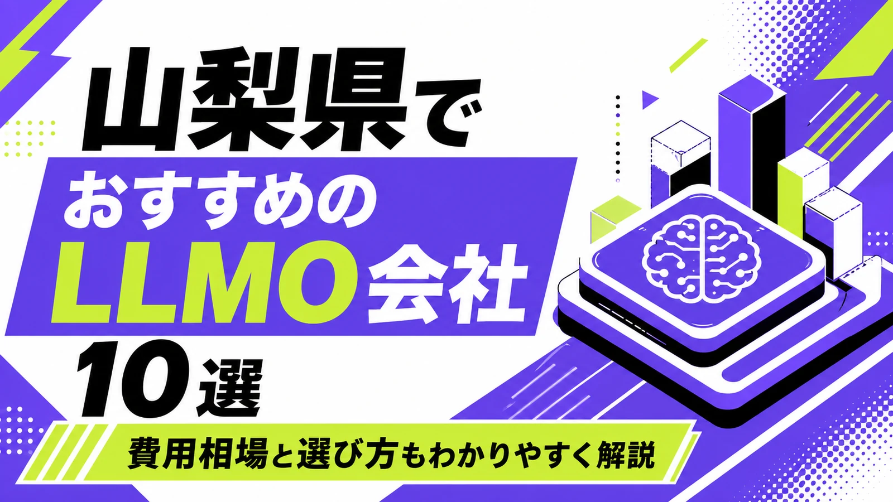
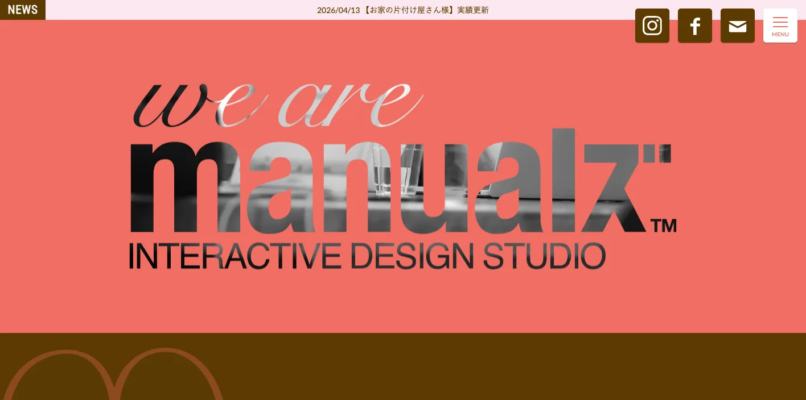
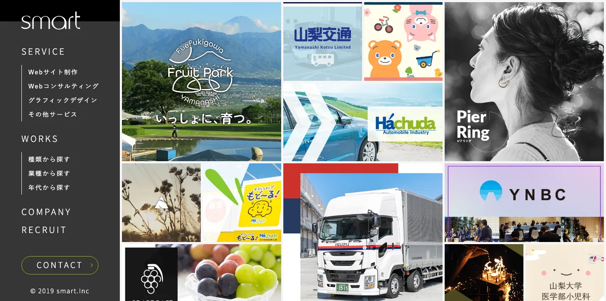
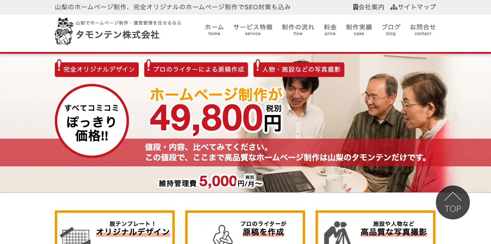
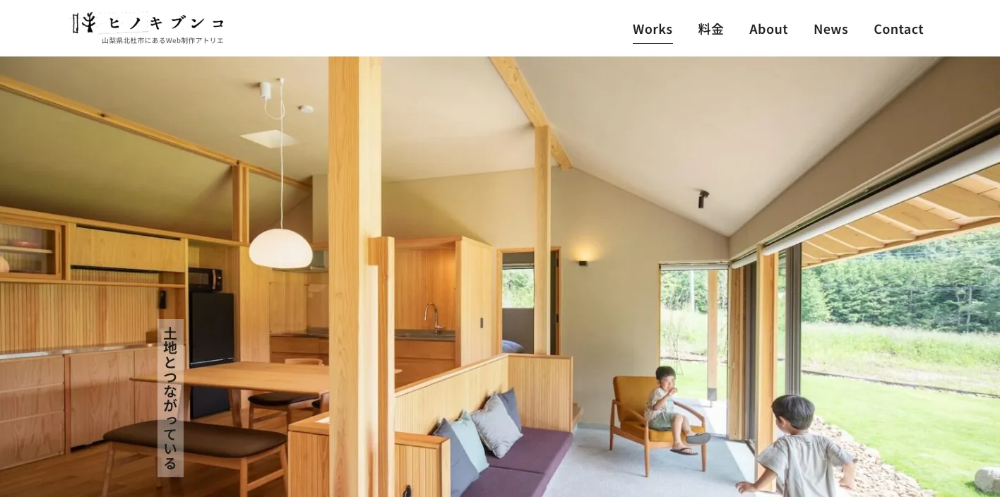
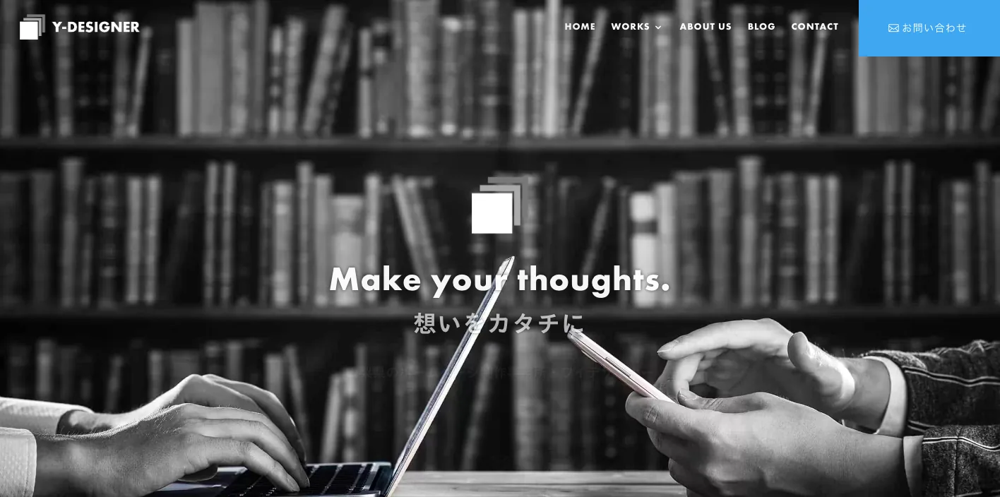
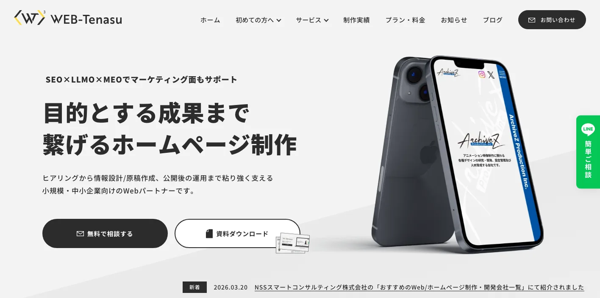
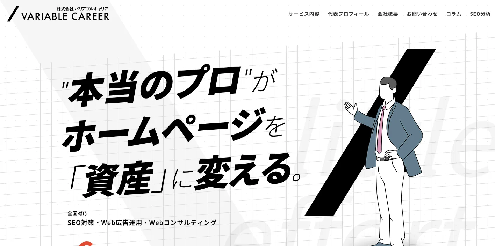
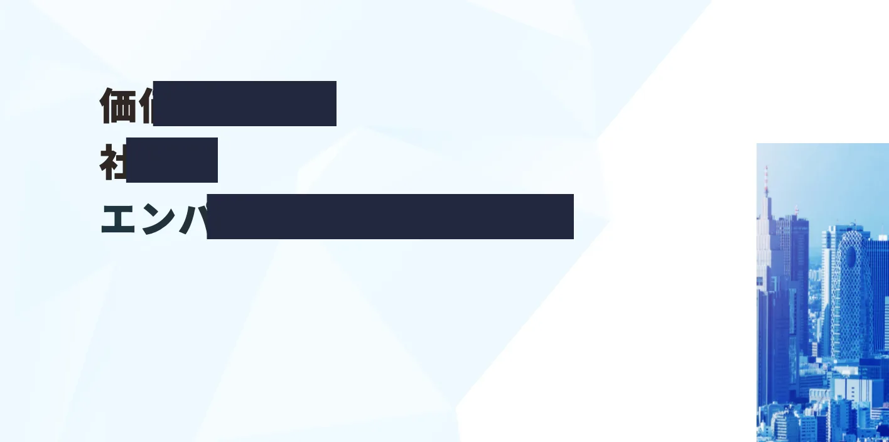

山梨県でおすすめのLLMO会社10選｜費用相場と選び方もわかりやすく解説

山梨県でLLMO会社を選ぶときは、「山梨のホームページ制作会社」や「甲府のSEO会社」という探し方だけでは足りません。甲府市・甲斐市・昭和町の生活者向け商圏、笛吹市・山梨市・甲州市の果樹とワイン、富士吉田市・富士河口湖町・山中湖村の観光、北杜市の移住・観光・食品、甲府のジュエリー、機械・電子部品など、AI検索で聞かれる質問が地域ごとに違うからです。
山梨県の推計人口は、令和8年4月1日現在で777,642人、世帯数は352,175世帯です。令和6年の観光入込客数は31,587,960人で、富士・東部エリアだけで17,296,345人、全体の54.8％を占めます。山梨県の製造業は、令和3年時点で事業所数1,676、従業者数72,124人、製造品出荷額等2兆5,302億20百万円で、生産用機械器具、食料品、電子部品・デバイス・電子回路の比率が高い地域です。
この記事では、山梨県でLLMOに取り組むときに比較したい会社、選び方、費用相場をまとめます。基礎から確認したい方はLLMO対策の基礎記事、近隣県も見たい方は新潟県の比較記事や石川県の比較記事も参考になります。自社サイトの現状を先に見たい場合は無料LLMO診断から確認できます。
目次

山梨県でおすすめのLLMO会社10選
今回は、山梨県内に拠点があり、ホームページ制作、SEO、Webマーケティング、ブランディング、広告、運用改善などの公開情報を確認しやすい会社を中心に、LLMOを明示している全国対応会社も補完的に加えました。山梨県内で「LLMO専業」を大きく打ち出す会社はまだ多くないため、AI検索対策そのものだけでなく、サイト構造、FAQ、地域ページ、事例、観光情報、商品情報、採用情報、更新体制まで支援できるかを見ています。
山梨県では、甲府市周辺の店舗・医療・士業・採用、富士五湖の観光、峡東の果樹・ワイン、甲府のジュエリー、郡内織物、機械・電子部品など、AIに答えさせたい質問が業種ごとに変わります。まずは表で向いている企業を確認し、その後に各社の特徴を見てください。
| 会社名 | 主な拠点・対応 | 向いている企業 | 確認できる主な支援領域 |
|---|---|---|---|
| 株式会社BISCOM | 甲府市 | ブランドと言葉からWeb全体を整えたい企業 | ブランディング・ホームページ制作・SEO・MEO・運用 |
| 株式会社マニュアルズ | 甲府市 | Web、紙、動画、ブランドをまとめて整えたい企業 | ホームページ制作・グラフィック・動画・Webコンサル・ブランディング |
| 株式会社スマート | 甲府市 | 制作、システム、運用まで相談したい企業 | Webサイト制作・Webコンサルティング・システム開発・映像制作 |
| タモンテン株式会社 | 山梨市 | 初めてのホームページや低予算で情報整備を始めたい店舗 | ホームページ制作・運営管理・SEO・原稿作成・撮影 |
| ヒノキブンコ | 北杜市 | SEOと記事制作を重視したい観光・地域事業者 | ホームページ制作・SEO・動画制作・記事制作 |
| Y-DESIGNER | 甲府市 | WordPressと継続運用を分かりやすく任せたい小規模事業者 | ホームページ制作・EC・印刷物・運営管理・SEO/MEOサポート |
| WEB-Tenasu | 甲府市 | SEO、LLMO、MEOを小さく始めたい中小企業 | ホームページ制作・SEO・LLMO・MEO・保守運用 |
| 株式会社バリアブルキャリア | 甲府市 | SEO、広告、Webコンサルを強めたい企業 | SEO対策・Web広告運用・Webコンサルティング・コンテンツマーケティング |
| 株式会社LiKG | 全国対応 | AI検索診断と独自データ活用まで進めたい企業 | LLMO診断・LLMO×SEOコンサル・記事制作・構造改善 |
| 株式会社ジオコード | 全国対応 | SEO、AIO、LLMO、実装までまとめたい企業 | SEO・AIO/LLMO・コンテンツ・UIUX・サイト修正 |
株式会社AIMAは山梨本社の会社ではありませんが、全国対応でLLMO支援を提供しています。月額5万円のLLMO支援は初期費用なし・1ヶ月単位で始められ、質問設計、記事制作、引用チェックに絞って実務を進められます。甲府市、笛吹市、山梨市、富士吉田市、富士河口湖町、北杜市のように検索文脈が分かれる場合も、まず無料LLMO診断で優先順位を確認できます。
株式会社BISCOM
株式会社BISCOMは、山梨県甲府市のデザイン会社です。公式サイトでは、コンセプト開発、ブランディング、戦略づくり、ディレクション、デザイン、運用サポートを確認できます。ホームページ制作では、調査分析、設計戦略、プランニングペーパー、ライティング、オリジナルデザイン、スマホ対応、基本SEO対策、SSLなどが基本仕様として示されています。
山梨県でLLMOを進める場合、会社の強みや商品価値を言葉にできていないと、AIにも正しく拾われません。BISCOMは、甲府の医療、教育、観光、ワイナリー、ジュエリー、地域ブランドのように、見た目だけでなく「何を選ばれる理由にするか」から整えたい企業に向いています。
参考：株式会社BISCOM｜トップページ、参考：BISCOMのホームページ制作
株式会社マニュアルズ

株式会社マニュアルズは、山梨県甲府市のホームページ制作・デザイン会社です。公式サイトでは、ホームページ制作、グラフィックデザイン、動画制作、Webコンサルティング、ブランディングを確認できます。会社概要では、ホームページの企画、制作、構成、デザイン、ライティング、構築、SEO、Web分析、Web改善、Web広告運用なども業務内容として示されています。
LLMOでは、サイトだけでなく、パンフレット、採用、動画、SNS、取材記事の内容がバラバラだと、AIが会社像をつかみにくくなります。マニュアルズは、甲府市周辺の店舗、医療、観光、寺院、教育、採用などで、Webと紙と動画の見え方をそろえたい企業に向いています。
参考：株式会社マニュアルズ｜トップページ、参考：マニュアルズ｜事業内容
株式会社スマート

株式会社スマートは、山梨県甲府市のWeb制作会社です。公式サイトでは、Webサイト制作、Webコンサルティング、グラフィックデザイン、その他サービスを確認できます。会社案内では、Webサイト制作、Webコンサルティング、グラフィックデザイン、システム開発、ネットワーク構築、映像制作が事業内容として示されています。
山梨県の企業では、ホームページだけでなく、予約、EC、採用、システム、映像、更新運用までつながるケースがあります。スマートは、甲府市周辺の企業サイト、リクルートサイト、EC、教育、医療、交通、観光、製造業などで、制作と運用をまとめて相談したい企業に向いています。
参考：smart｜トップページ、参考：smart｜Webサイト制作
タモンテン株式会社

タモンテン株式会社は、山梨県山梨市のホームページ制作会社です。公式サイトでは、山梨でホームページ制作・運営管理を任せられる会社として、完全オリジナルのホームページ制作、SEO対策込み、原稿作成、写真撮影、維持管理などを確認できます。制作料金として49,800円税別、維持管理費5,000円/月からという表示も確認できます。
LLMOの第一歩は、AIに読ませる会社情報、サービス、料金、対応エリア、FAQを公開することです。タモンテンは、山梨市、笛吹市、甲州市などの店舗、クリニック、介護、地域サービスで、まず必要な情報を分かりやすく揃えたい事業者に向いています。
ヒノキブンコ

ヒノキブンコは、山梨県北杜市にあるWeb制作アトリエです。公式サイトでは、ホームページ制作、SEO、動画制作、記事制作を確認できます。SEOエンジニアとして2016年に事業をスタートし、20以上の業種でSEOを担当してきたこと、正しいSEOを施したホームページ制作、Web記事やインタビュー記事の制作なども示されています。
北杜市、清里、八ヶ岳、ワイナリー、観光、移住、地域メディアのような文脈では、単なる会社概要よりも、場所、作り手、体験、季節、アクセス、ストーリーが重要です。ヒノキブンコは、SEOと読み物の両方から、山梨の地域性を深く伝えたい事業者に向いています。
Y-DESIGNER

Y-DESIGNERは、山梨県甲府市のホームページ制作事務所です。公式サイトでは、WordPressでの制作、独自ドメインとSSL、運営サポート、SEO対策、Googleビジネスプロフィール対策、ECサイト制作、印刷物制作、Webサイトの運営・管理などを確認できます。低価格で明朗会計な制作を打ち出している点も特徴です。
LLMOでは、作って終わりではなく、公開後にFAQ、事例、お知らせ、季節情報を更新できる体制が必要です。Y-DESIGNERは、甲府市周辺の小規模事業者、治療院、宿泊、交通、地域店舗などで、WordPressを使いながら少しずつ情報を増やしたい企業に向いています。
WEB-Tenasu

WEB-Tenasuは、山梨県甲府市を拠点とするホームページ制作専門のフリーランスです。公式サイトでは、SEO、LLMO、MEOでマーケティング面もサポートすると明示され、ヒアリングから情報設計、原稿作成、公開後の運用まで支援することを確認できます。料金例として、会社案内用ホームページ制作40万円、集客用70万円、戦略設計型90万円からのプランも掲載されています。
山梨県内でLLMOという言葉まで明示している点は比較しやすい材料です。WEB-Tenasuは、甲府市周辺の中小企業が、SEO、MEO、LLMO、公式LINE、保守運用を大きすぎない体制で始めたい場合に向いています。
株式会社バリアブルキャリア

株式会社バリアブルキャリアは、山梨県甲府市を拠点にSEO対策、Web広告運用、Webコンサルティングを行う会社です。公式サイトでは、全国対応のSEO対策、Web広告運用、Webコンサルティングを掲げ、SEO、コンテンツマーケティング、Web広告運用代行、アドバイザリーなどを確認できます。代表者のWebエンジニア、Webディレクター、Webマーケターとしての経験も示されています。
LLMOはSEOの延長線上にあるため、検索意図、記事設計、アクセス解析、広告との切り分けが分かる会社と相性があります。バリアブルキャリアは、甲府市周辺だけでなく、富士五湖、河口湖、ほうとう、果樹、観光のような検索需要をコンテンツで取りたい企業に向いています。
株式会社LiKG

株式会社LiKGは、LLMOコンサルティングを明示している全国対応会社です。公式サイトでは、LLMO診断、LLMO×SEOコンサルティング、EEAT強化記事制作、AI検索での露出状況調査、競合比較、構造化データ改善指示、独自データ活用などを確認できます。料金は、LLMO診断10万円から、LLMO×SEOコンサルティング30万円から、EEAT強化記事制作5万円/1記事からと掲載されています。
山梨県の企業がLiKGを比較するなら、県内取材や撮影よりも、AI検索の現状診断、独自データの活用、構造化データ、既存記事改善、全国競合との比較を重視する場合です。ジュエリー、製造、観光、ワイン、採用などで、既存SEOはあるがAI検索でどう見られているか分からない企業に向いています。
株式会社ジオコード

株式会社ジオコードは、SEO、コンテンツ、オウンドメディアから、AIO・LLMOなどAI最適化まで支援する全国対応会社です。公式サイトでは、通常プラン15万円から、SEO対策コンサルティング、サイト修正、デザイン/UIUX改善、AIO・LLMO、コンテンツマーケティング、構造化データ、AI生成回答の競合調査、独自情報の組み込みなどを確認できます。
山梨県の企業がジオコードを比較するなら、サイト修正や実装を含むSEO・LLMO支援を重視する場合です。県外競合と比較される観光、EC、ジュエリー、製造、医療、採用など、既存サイトの技術改善まで必要な企業に向いています。県内制作会社と分担する選び方もあります。
参考：株式会社ジオコード｜SEO対策・AIO・LLMOなどAI最適化
山梨県のLLMO会社を比較する際のポイント
このブロックでは、会社名の知名度ではなく、山梨県で成果に直結しやすい比較軸を整理します。会社紹介では「誰に向いているか」を見ましたが、ここでは発注前に見るべき能力を、甲府都市圏、富士五湖観光、果樹・ワイン、ジュエリー・製造、県内密着と全国対応の使い分けに分けます。
甲府市・甲斐市・昭和町は、生活者向け検索と法人検索を分ける
甲府市周辺では、医療、士業、住宅、教育、採用、BtoB、店舗、ジュエリー、行政・公共系の検索が混ざります。「甲府市 おすすめ」「甲斐市 相談」「昭和町 採用」のような生活者向け検索と、「山梨 製造業 委託」「甲府 ジュエリー OEM」のような法人検索では、ページに必要な情報が違います。
比較する会社には、トップページをきれいにするだけでなく、サービス別ページ、料金、事例、FAQ、地名別の対応情報、採用情報をどう分けるかを聞いてください。AI検索では、短い会社紹介よりも、質問に対してすぐ答えられる構造が重要です。
富士五湖・富士吉田・河口湖は、観光の質問に答えられるかを見る
令和6年の山梨県観光入込客数は31,587,960人で、富士・東部エリアが17,296,345人、構成比54.8％でした。観光事業者は、富士山、河口湖、山中湖、忍野、富士吉田、キャンプ、温泉、宿泊、飲食、体験、交通、天候、インバウンドの質問を受けやすいです。
LLMO会社を比較するときは、施設紹介だけでなく、アクセス、予約、季節ごとの楽しみ方、雨の日、子連れ、外国人対応、キャンセル、駐車場、周遊ルートまで設計できるかを見ます。観光では、AIに「この人にはどこが向くか」を説明してもらう準備が必要です。
峡東の果樹・ワインは、商品情報と体験情報を分ける
山梨県は、ぶどう、もも、すももの栽培面積と収穫量で日本一と県が紹介しています。また、山梨は日本のワイン発祥の地として知られ、国内の約3割のワインを生産していると山梨県ワイン酒造組合も説明しています。笛吹市、山梨市、甲州市では、果樹園、ワイナリー、直売、ギフト、観光農園の情報が重要です。
この領域では、「商品を買いたい人」と「体験したい人」で必要な情報が違います。配送、保存、品種、収穫時期、予約、雨天対応、団体、ペット同伴、写真映え、試飲、運転者対応など、AIが答えやすいFAQを整えられる会社を選ぶとよいです。
ジュエリー・機械・電子部品は、技術情報と信頼材料を出せるかを見る
山梨県の製造業は、令和3年時点で事業所数1,676、従業者数72,124人、製造品出荷額等2兆5,302億20百万円です。業種別では、生産用機械器具製造業、食料品製造業、電子部品・デバイス・電子回路製造業の比率が高いとされています。さらに、山梨のジュエリーは水晶を起点に発展し、宝飾品出荷額で全国有数の産地として紹介されています。
BtoBのLLMOでは、きれいなデザインよりも、設備、加工範囲、対応素材、品質管理、検査体制、ロット、納期、OEM、試作、導入実績、認証、よくある質問が重要です。比較する会社には、営業資料や現場情報をWebに変換する力があるかを確認してください。
県内会社と全国対応会社は、役割を分けて考える
山梨県内の会社は、現地取材、写真撮影、地域商圏、観光や農業の肌感覚に強いことが多いです。一方で、LLMO専業やSEO大手は、AI検索の診断、構造化データ、既存記事改善、全国競合の比較に強い場合があります。
おすすめは、最初に「何が足りないか」を切り分けることです。サイトが古い、写真が足りない、地域情報が薄いなら県内会社。記事は多いのにAI検索で出ない、構造化データや競合比較が弱いなら全国対応会社。両方必要なら、県内会社に取材・制作を任せ、LLMO会社に設計とチェックを任せる形もあります。
参考：山梨県の推計人口・世帯（令和8年4月1日現在）、山梨県観光入込客統計調査結果、山梨の商工業（製造業編）、富士の国やまなし観光ネット｜ジュエリー・宝石
山梨県のLLMO会社に依頼する費用相場
LLMOの費用は、診断だけなのか、記事制作まで含むのか、サイト改修や撮影、EC、予約、システム開発まで必要なのかで変わります。山梨県では、甲府市の生活者向けサービス、峡東の果樹・ワイン、富士五湖の観光、甲府のジュエリー、機械・電子部品の製造業のように、追加で作るべきページやFAQの量が業種によって大きく変わります。
| 依頼内容 | 費用目安 | 山梨県での考え方 |
|---|---|---|
| LLMO診断・AI検索の現状確認 | 無料〜10万円前後 | 自社名、地域名、業種名でAIにどう出るかを見る段階 |
| 小規模なSEO・LLMO運用 | 月額5万円〜15万円前後 | FAQ、地域ページ、既存記事改善を小さく回す段階 |
| 伴走型のSEO・LLMO支援 | 月額15万円〜30万円前後 | 競合調査、構成作成、構造化データ、改善提案、定例を含む段階 |
| サイト制作・改修込み | 30万円台〜200万円超 | 撮影、採用、EC、予約、製品情報、システム連携の有無で広がる |
| 観光・製造・多拠点の本格運用 | 月額30万円以上 | 複数地域、商品カテゴリ、営業資料、事例制作まで必要な段階 |
診断だけなら、まずは質問の棚卸しが中心
診断では、「山梨 LLMO会社」「甲府 ホームページ制作」「河口湖 ホテル 子連れ」「山梨 ワイン ギフト」「甲府 ジュエリー OEM」のような質問で、自社や競合がAIにどう扱われているかを確認します。いきなり記事を増やすより、どの質問で選ばれたいかを決めることが先です。
山梨県の場合、観光、農産物、地域店舗、BtoB製造で質問の形が大きく変わります。診断費用が安くても、調査する質問が浅いと意味がありません。県内の地名、業種、季節、購買目的まで含めて見てくれるかを確認してください。
月額5万〜15万円は、既存サイトを育てる段階
小規模運用では、既存ページの修正、FAQ追加、地域ページ、事例ページ、お知らせ、ブログの改善を進めます。甲府市周辺の店舗や士業、治療院、住宅、採用、観光農園などは、最初から大きな改修をせず、AIに拾われやすい基本情報を増やすだけでも前進します。
この価格帯では、毎月大量の記事を作るより、料金、対応エリア、予約、アクセス、キャンセル、事例、よくある質問を整えるほうが現実的です。文章の量より、ユーザーの疑問に答える密度を重視してください。
月額15万〜30万円は、競合調査と構造改善まで含める段階
山梨県の企業では、富士五湖の観光、果樹・ワイン、ジュエリー、製造業、医療、採用など、競合が県内だけでなく全国に広がる領域があります。この場合、既存記事の修正だけでなく、競合調査、検索意図の分類、構造化データ、内部リンク、CV導線、事例作成が必要です。
社内に担当者がいるなら、LLMO会社には戦略と構成を任せ、社内で商品情報や現場情報を出す形にすると費用対効果が上がります。社内に人がいない場合は、取材、撮影、入稿、レポートまで含めた伴走型を選ぶ必要があります。
制作・撮影・EC・予約を含めると、総額は大きく変わる
ホームページを作り直す、写真撮影をする、動画を作る、採用ページを整える、ECや予約システムとつなぐ場合は、費用が大きく変わります。山梨県では、宿泊、飲食、観光農園、ワイナリー、ジュエリー、食品、機械・電子部品、医療、住宅で、写真や事例が成果に直結しやすいです。
たとえば、WEB-Tenasuは会社案内用40万円、集客用70万円、戦略設計型90万円からの制作プランを掲載しています。タモンテンは49,800円税別の制作料金と月額管理費を示しています。価格だけで比べず、原稿、写真、SEO、更新、分析、FAQ、LLMOのどこまで含むかを見てください。
観光・製造・ジュエリーは、一次情報づくりの費用を見込む
AI検索で引用されるには、他社にもある一般論ではなく、自社にしかない一次情報が必要です。観光なら季節別の体験、アクセス、よくある質問。製造なら設備、加工範囲、対応ロット、検査体制。ジュエリーなら素材、工程、OEM、修理、ブランドストーリー。ワインや果樹なら品種、収穫時期、配送、予約、ギフトの説明です。
この一次情報を作るには、取材、撮影、社内ヒアリング、資料整理が必要です。見積もりを見るときは、記事本数だけでなく、情報を引き出す工程が含まれているかを確認してください。
参考：WEB-Tenasu｜プラン・料金、タモンテン株式会社｜制作料金、株式会社LiKG｜LLMOコンサルティング、株式会社ジオコード｜SEO対策・AI最適化
山梨県のLLMO会社に関するよくある質問
山梨県のLLMO会社に依頼する意味はありますか？
あります。山梨県は甲府市周辺の生活・法人商圏、富士五湖・富士吉田・河口湖の観光、峡東の果樹とワイン、甲府のジュエリー、機械・電子部品などで検索意図が分かれます。地域と業種ごとに一次情報を整理する意味があります。
山梨県内の会社でないとLLMOは任せられませんか？
必ずしも県内本社である必要はありません。現地取材、撮影、観光や地域商圏の理解が必要なら県内会社が向きます。一方で、AI検索診断、構造化データ、既存記事改善、全国競合との比較は、LLMOを明示している全国対応会社も選択肢になります。
甲府市と富士五湖エリアでは、対策内容は変わりますか？
変わります。甲府市は医療、士業、住宅、採用、BtoB、ジュエリーなどの比較が中心になりやすく、富士五湖エリアは宿泊、観光、交通、季節、インバウンド、天候に関する質問が多くなります。同じ山梨県でもページで答える内容を分ける必要があります。
果樹園・ワイナリーでもLLMOは必要ですか？
必要です。ぶどう、もも、ワイン、観光農園、直売、ギフト、配送、収穫時期、予約方法、ペット同伴、雨天対応など、ユーザーがAIに聞きやすい質問が多い業種です。商品ページとFAQを整えると、検索前の比較に入りやすくなります。
山梨県の製造業やジュエリー業でもLLMOは使えますか？
使えます。機械、電子部品、食品、織物、ジュエリーでは、設備、加工範囲、素材、対応ロット、品質管理、OEM対応、導入実績をAIが読み取りやすい形で出すことが重要です。BtoBでは製品ページ、事例、FAQの精度が問い合わせ前の比較に効きます。
観光・宿泊・飲食業では何を整えるべきですか？
富士山、河口湖、山中湖、昇仙峡、石和温泉、ワイナリー、果物狩りでは、アクセス、予約、周遊ルート、季節イベント、外国人対応、決済、駐車場、天候、キャンセル、子連れ対応を整えるべきです。AI検索では「今行けるか」「誰に向くか」が聞かれやすいです。
山梨県のLLMO費用はどれくらい見ておけばよいですか？
診断だけなら無料から10万円前後、小さな運用なら月額5万円から15万円前後、伴走支援は月額15万円から30万円前後が目安です。撮影、取材、サイト改修、EC、採用、製品ページ、多地域展開を含めると総額は上がります。
成果が出るまでの期間はどれくらいですか？
まず3か月から6か月を目安に見ます。既存サイトの情報量、競合の強さ、FAQや事例の整備状況、構造化データ、更新体制によって変わります。短期で断定せず、AI検索での見え方を観測しながら改善する進め方が現実的です。
山梨県でLLMO会社を選ぶなら、甲府都市圏と富士五湖・峡東の質問を分けて考えましょう
山梨県のLLMO会社選びでは、甲府市、甲斐市、昭和町、笛吹市、山梨市、甲州市、富士吉田市、富士河口湖町、北杜市を同じ文章でまとめないことが重要です。甲府都市圏の生活者向けサービス、峡東の果樹・ワイン、富士五湖の観光、甲府のジュエリー、機械・電子部品では、AI検索で聞かれる質問がかなり違います。
まずは、自社が答えるべき質問を分けてください。地元の写真や取材、観光・地域商圏の理解が必要なら山梨県内の制作会社が合います。AI検索診断、構造化データ、既存記事改善、全国競合との比較が必要なら、LLMOを明示している全国対応会社も候補に入ります。
迷う場合は、会社名で選ぶよりも「甲府で選ばれたいのか」「富士五湖の観光客に選ばれたいのか」「果樹・ワイン・ジュエリー・製造で専門性を出したいのか」を先に決めると失敗しにくくなります。LLMOは記事を増やす作業ではなく、AIに引用されても困らない一次情報を整える作業です。